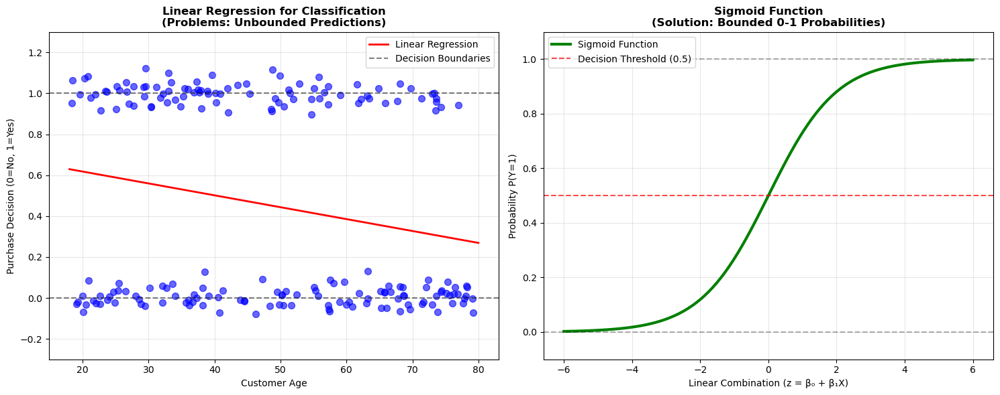
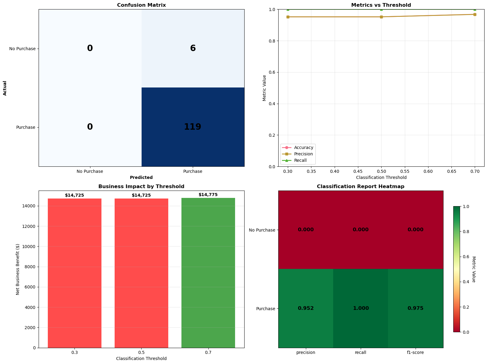

Logistic Regression transforms probability estimation into business decision making!
Part 1: Why Linear Regression Fails for Classification
The Problem with Continuous Predictions
import pandas as pdimport numpy as npimport matplotlib.pyplot as pltimport seaborn as snsfrom sklearn.linear_model import LinearRegression, LogisticRegressionfrom sklearn.model_selection import train_test_splitfrom sklearn.metrics import accuracy_score, precision_score, recall_score, f1_score, confusion_matrix, classification_reportimport warningswarnings.filterwarnings('ignore')# Set professional plotting styleplt.style.use('default')sns.set_palette("husl")print("WHY LINEAR REGRESSION FAILS FOR CLASSIFICATION")print("="*55)# Business scenario: Customer purchase predictionnp.random.seed(42)n_customers =200# Generate customer datacustomer_age = np.random.uniform(18, 80, n_customers)customer_income = np.random.uniform(25000, 150000, n_customers)# Create realistic purchase probability based on age and income# Younger, higher income customers more likely to purchaseage_effect = (80- customer_age) /60# Younger = higherincome_effect = (customer_income -25000) /125000# Higher income = higherbase_probability =0.1+0.4* age_effect +0.3* income_effect# Add some randomnessbase_probability += np.random.normal(0, 0.1, n_customers)base_probability = np.clip(base_probability, 0, 1)# Generate actual purchases based on probabilitypurchase_decision = np.random.binomial(1, base_probability, n_customers)# Create datasetcustomer_data = pd.DataFrame({'Age': customer_age,'Income': customer_income,'Purchase_Probability': base_probability,'Purchased': purchase_decision})print("Customer Purchase Dataset:")print("="*30)print(f"Total Customers: {len(customer_data)}")print(f"Purchases: {purchase_decision.sum()} ({purchase_decision.mean()*100:.1f}%)")print(f"Non-Purchases: {len(customer_data) - purchase_decision.sum()}")# Demonstrate linear regression failureprint(f"\nLINEAR REGRESSION ATTEMPT:")print("="*30)# Try linear regression with age as predictorX_age = customer_data[['Age']]y_purchase = customer_data['Purchased']linear_model = LinearRegression()linear_model.fit(X_age, y_purchase)linear_predictions = linear_model.predict(X_age)print(f"Linear Regression Results:")print(f" Coefficient: {linear_model.coef_[0]:.4f}")print(f" Intercept: {linear_model.intercept_:.4f}")print(f" Prediction Range: [{linear_predictions.min():.3f}, {linear_predictions.max():.3f}]")# Problems with linear regressionproblems = []if linear_predictions.min() <0: problems.append(f"Negative predictions ({linear_predictions.min():.3f})")if linear_predictions.max() >1: problems.append(f"Predictions > 1 ({linear_predictions.max():.3f})")print(f"\nProblems with Linear Regression:")if problems:for problem in problems:print(f" ✗ {problem}")else:print(f" ✗ Predictions are bounded, but still problematic for probability interpretation")print(f" ✗ No natural threshold for classification")print(f" ✗ Assumes linear relationship between features and probability")print(f" ✗ Poor extrapolation behavior")# Visualize the problemfig, axes = plt.subplots(1, 2, figsize=(15, 6))# Linear regression attemptax1 = axes[0]# Scatter plot with jitter for binary outcome visibilityjittered_purchase = purchase_decision + np.random.normal(0, 0.05, n_customers)ax1.scatter(customer_age, jittered_purchase, alpha=0.6, s=50, color='blue')# Linear regression lineage_range = np.linspace(18, 80, 100)linear_line = linear_model.predict(age_range.reshape(-1, 1))ax1.plot(age_range, linear_line, color='red', linewidth=2, label='Linear Regression')# Horizontal lines at 0 and 1ax1.axhline(y=0, color='black', linestyle='--', alpha=0.5, label='Decision Boundaries')ax1.axhline(y=1, color='black', linestyle='--', alpha=0.5)ax1.set_xlabel('Customer Age')ax1.set_ylabel('Purchase Decision (0=No, 1=Yes)')ax1.set_title('Linear Regression for Classification\n(Problems: Unbounded Predictions)', fontweight='bold')ax1.legend()ax1.grid(True, alpha=0.3)ax1.set_ylim(-0.3, 1.3)# Show the sigmoid function as solutionax2 = axes[1]# Create sigmoid curvedef sigmoid(x):return1/ (1+ np.exp(-x))z_values = np.linspace(-6, 6, 100)sigmoid_values = sigmoid(z_values)ax2.plot(z_values, sigmoid_values, color='green', linewidth=3, label='Sigmoid Function')ax2.axhline(y=0.5, color='red', linestyle='--', alpha=0.7, label='Decision Threshold (0.5)')ax2.axhline(y=0, color='black', linestyle='--', alpha=0.3)ax2.axhline(y=1, color='black', linestyle='--', alpha=0.3)ax2.set_xlabel('Linear Combination (z = β₀ + β₁X)')ax2.set_ylabel('Probability P(Y=1)')ax2.set_title('Sigmoid Function\n(Solution: Bounded 0-1 Probabilities)', fontweight='bold')ax2.legend()ax2.grid(True, alpha=0.3)ax2.set_ylim(-0.1, 1.1)plt.tight_layout()plt.show()print(f"\nSIGMOID FUNCTION ADVANTAGES:")print("="*35)print(" ✓ Always produces probabilities between 0 and 1")print(" ✓ S-shaped curve appropriate for binary outcomes")print(" ✓ Smooth transitions (no sharp cutoffs)")print(" ✓ Asymptotic behavior (approaches 0 and 1)")print(" ✓ Interpretable as log-odds")
WHY LINEAR REGRESSION FAILS FOR CLASSIFICATION
=======================================================
Customer Purchase Dataset:
==============================
Total Customers: 200
Purchases: 91 (45.5%)
Non-Purchases: 109
LINEAR REGRESSION ATTEMPT:
==============================
Linear Regression Results:
Coefficient: -0.0058
Intercept: 0.7340
Prediction Range: [0.274, 0.627]
Problems with Linear Regression:
✗ Predictions are bounded, but still problematic for probability interpretation
✗ No natural threshold for classification
✗ Assumes linear relationship between features and probability
✗ Poor extrapolation behavior
SIGMOID FUNCTION ADVANTAGES:
===================================
✓ Always produces probabilities between 0 and 1
✓ S-shaped curve appropriate for binary outcomes
✓ Smooth transitions (no sharp cutoffs)
✓ Asymptotic behavior (approaches 0 and 1)
✓ Interpretable as log-odds

Part 2: Logistic Regression Implementation
Building Binary Classification Models
print("LOGISTIC REGRESSION IMPLEMENTATION")print("="*40)# Enhanced customer dataset for logistic regression# Add more features for realistic business scenarionp.random.seed(42)n_customers =500# Generate comprehensive customer featurescustomer_features = pd.DataFrame({'Age': np.random.uniform(18, 80, n_customers),'Income': np.random.uniform(25000, 150000, n_customers),'Previous_Purchases': np.random.poisson(3, n_customers),'Website_Visits': np.random.uniform(1, 50, n_customers),'Time_as_Customer': np.random.uniform(0, 10, n_customers)})# Create realistic purchase probability with multiple factors# Logistic regression form: log-odds = β₀ + β₁X₁ + β₂X₂ + ...log_odds = (-3.0+0.02* customer_features['Age'] +# Older customers slightly more likely0.00003* customer_features['Income'] +# Higher income more likely0.4* customer_features['Previous_Purchases'] +# Loyalty effect0.05* customer_features['Website_Visits'] +# Engagement effect0.2* customer_features['Time_as_Customer'] +# Tenure effect np.random.normal(0, 0.5, n_customers)) # Random noise# Convert to probabilities using sigmoidpurchase_probabilities =1/ (1+ np.exp(-log_odds))purchase_decisions = np.random.binomial(1, purchase_probabilities, n_customers)# Add target variablecustomer_features['Purchase_Probability_True'] = purchase_probabilitiescustomer_features['Purchased'] = purchase_decisionsprint("Enhanced Customer Dataset:")print("="*30)print(customer_features.describe().round(2))print(f"\nPurchase Rate: {purchase_decisions.mean()*100:.1f}%")# Prepare features and targetfeature_columns = ['Age', 'Income', 'Previous_Purchases', 'Website_Visits', 'Time_as_Customer']X = customer_features[feature_columns]y = customer_features['Purchased']# Train-test splitX_train, X_test, y_train, y_test = train_test_split(X, y, test_size=0.25, random_state=42, stratify=y)print(f"\nTrain-Test Split:")print(f" Training: {len(X_train)} customers")print(f" Test: {len(X_test)} customers")print(f" Training Purchase Rate: {y_train.mean()*100:.1f}%")print(f" Test Purchase Rate: {y_test.mean()*100:.1f}%")# Train logistic regression modellogistic_model = LogisticRegression(random_state=42)logistic_model.fit(X_train, y_train)# Extract model parametersintercept = logistic_model.intercept_[0]coefficients = logistic_model.coef_[0]print(f"\nLogistic Regression Coefficients:")print(f" Intercept: {intercept:.4f}")print("\nFeature Coefficients (log-odds):")for feature, coef inzip(feature_columns, coefficients):print(f" {feature}: {coef:.6f}")# Convert to odds ratios for business interpretationprint(f"\nOdds Ratios (more interpretable):")for feature, coef inzip(feature_columns, coefficients): odds_ratio = np.exp(coef)if odds_ratio >1: effect =f"increases odds by {(odds_ratio-1)*100:.1f}%"else: effect =f"decreases odds by {(1-odds_ratio)*100:.1f}%"print(f" {feature}: {odds_ratio:.3f} - Each unit increase {effect}")# Make predictions# Class predictions (0 or 1)y_pred_class = logistic_model.predict(X_test)# Probability predictionsy_pred_proba = logistic_model.predict_proba(X_test)y_pred_proba_positive = y_pred_proba[:, 1] # Probability of class 1 (Purchase)print(f"\nPrediction Examples:")print("="*20)print("Sample of first 10 test predictions:")print("Customer | Actual | Pred_Class | Pred_Prob")print("-"*45)for i inrange(10): actual = y_test.iloc[i] pred_class = y_pred_class[i] pred_prob = y_pred_proba_positive[i]print(f"{i+1:8} | {actual:6} | {pred_class:10} | {pred_prob:.3f}")# Business interpretation examplesprint(f"\nBUSINESS INTERPRETATION EXAMPLES:")print("="*40)# Create example customer profilesexample_customers = pd.DataFrame({'Age': [25, 45, 65],'Income': [40000, 80000, 120000],'Previous_Purchases': [0, 2, 8],'Website_Visits': [5, 15, 30],'Time_as_Customer': [0.5, 3, 7],'Profile': ['Young New Customer', 'Middle-aged Regular', 'Senior Loyal Customer']})example_probabilities = logistic_model.predict_proba(example_customers[feature_columns])[:, 1]example_classes = logistic_model.predict(example_customers[feature_columns])for i, (_, customer) inenumerate(example_customers.iterrows()):print(f"\n{customer['Profile']}:")print(f" Age: {customer['Age']}, Income: ${customer['Income']:,}")print(f" Previous Purchases: {customer['Previous_Purchases']}")print(f" Website Visits: {customer['Website_Visits']}, Tenure: {customer['Time_as_Customer']:.1f} years")print(f" → Purchase Probability: {example_probabilities[i]:.1%}")print(f" → Classification: {'Will Purchase'if example_classes[i] else'Will Not Purchase'}")# Visualize model performancefig, axes = plt.subplots(2, 2, figsize=(15, 12))# 1. Probability distribution by actual classax1 = axes[0, 0]purchased = y_pred_proba_positive[y_test ==1]not_purchased = y_pred_proba_positive[y_test ==0]ax1.hist(not_purchased, bins=20, alpha=0.7, color='red', label='Did Not Purchase', density=True)ax1.hist(purchased, bins=20, alpha=0.7, color='green', label='Purchased', density=True)ax1.axvline(0.5, color='black', linestyle='--', alpha=0.7, label='Decision Threshold')ax1.set_xlabel('Predicted Purchase Probability')ax1.set_ylabel('Density')ax1.set_title('Probability Distribution by Actual Class', fontweight='bold')ax1.legend()ax1.grid(True, alpha=0.3)# 2. Feature importance (coefficient magnitudes)ax2 = axes[0, 1]coef_abs = np.abs(coefficients)colors = ['green'if coef >0else'red'for coef in coefficients]bars = ax2.barh(range(len(feature_columns)), coef_abs, color=colors, alpha=0.7)ax2.set_yticks(range(len(feature_columns)))ax2.set_yticklabels([col.replace('_', ' ') for col in feature_columns])ax2.set_xlabel('Absolute Coefficient Value')ax2.set_title('Feature Importance\n(Green=Increases Purchase, Red=Decreases)', fontweight='bold')ax2.grid(axis='x', alpha=0.3)# 3. Sigmoid curve with data pointsax3 = axes[1, 0]# Use one feature for visualization (Income)income_sorted_idx = np.argsort(X_test['Income'])income_sorted = X_test['Income'].iloc[income_sorted_idx]prob_sorted = y_pred_proba_positive[income_sorted_idx]ax3.scatter(X_test['Income'], y_test, alpha=0.3, s=30, color='blue', label='Actual Purchases')ax3.plot(income_sorted, prob_sorted, color='red', linewidth=2, alpha=0.7, label='Predicted Probability')ax3.axhline(y=0.5, color='black', linestyle='--', alpha=0.7, label='Decision Threshold')ax3.set_xlabel('Income ($)')ax3.set_ylabel('Purchase Probability')ax3.set_title('Logistic Curve: Income vs Purchase Probability', fontweight='bold')ax3.legend()ax3.grid(True, alpha=0.3)# 4. ROC-like visualizationax4 = axes[1, 1]# Sort by predicted probabilitysorted_indices = np.argsort(y_pred_proba_positive)[::-1] # Descending ordercumulative_positives = np.cumsum(y_test.iloc[sorted_indices])total_positives = cumulative_positives.iloc[-1]# Calculate precision at different thresholdsprecision_curve = cumulative_positives / np.arange(1, len(sorted_indices) +1)recall_curve = cumulative_positives / total_positivesax4.plot(recall_curve, precision_curve, linewidth=2, color='blue')ax4.set_xlabel('Recall (True Positive Rate)')ax4.set_ylabel('Precision (Positive Predictive Value)')ax4.set_title('Precision-Recall Curve', fontweight='bold')ax4.grid(True, alpha=0.3)ax4.set_xlim(0, 1)ax4.set_ylim(0, 1)plt.tight_layout()plt.show()# Model evaluation summaryprint(f"\nMODEL EVALUATION PREVIEW:")print("="*30)accuracy = accuracy_score(y_test, y_pred_class)print(f"Accuracy: {accuracy:.3f} ({accuracy*100:.1f}%)")print(f"Baseline (always predict majority): {max(y_test.mean(), 1-y_test.mean()):.3f}")print(f"Improvement over baseline: {accuracy -max(y_test.mean(), 1-y_test.mean()):.3f}")print("\n(Detailed evaluation metrics coming next...)")
LOGISTIC REGRESSION IMPLEMENTATION
========================================
Enhanced Customer Dataset:
==============================
Age Income Previous_Purchases Website_Visits \
count 500.00 500.00 500.00 500.00
mean 48.91 85243.92 2.99 25.35
std 18.52 35686.68 1.74 13.86
min 18.31 25579.00 0.00 1.10
25% 32.96 53637.41 2.00 13.27
50% 49.82 83977.70 3.00 26.40
75% 64.88 115792.10 4.00 36.45
max 79.56 149964.71 8.00 49.95
Time_as_Customer Purchase_Probability_True Purchased
count 500.00 500.00 500.00
mean 4.85 0.94 0.95
std 2.91 0.10 0.21
min 0.01 0.27 0.00
25% 2.31 0.95 1.00
50% 4.62 0.98 1.00
75% 7.52 0.99 1.00
max 10.00 1.00 1.00
Purchase Rate: 95.4%
Train-Test Split:
Training: 375 customers
Test: 125 customers
Training Purchase Rate: 95.5%
Test Purchase Rate: 95.2%
Logistic Regression Coefficients:
Intercept: -0.0004
Feature Coefficients (log-odds):
Age: -0.016196
Income: 0.000016
Previous_Purchases: 0.163816
Website_Visits: 0.052783
Time_as_Customer: 0.305045
Odds Ratios (more interpretable):
Age: 0.984 - Each unit increase decreases odds by 1.6%
Income: 1.000 - Each unit increase increases odds by 0.0%
Previous_Purchases: 1.178 - Each unit increase increases odds by 17.8%
Website_Visits: 1.054 - Each unit increase increases odds by 5.4%
Time_as_Customer: 1.357 - Each unit increase increases odds by 35.7%
Prediction Examples:
====================
Sample of first 10 test predictions:
Customer | Actual | Pred_Class | Pred_Prob
---------------------------------------------
1 | 1 | 1 | 0.997
2 | 1 | 1 | 0.970
3 | 1 | 1 | 0.994
4 | 1 | 1 | 0.981
5 | 1 | 1 | 0.967
6 | 1 | 1 | 0.929
7 | 1 | 1 | 0.975
8 | 1 | 1 | 0.975
9 | 1 | 1 | 0.933
10 | 1 | 1 | 0.988
BUSINESS INTERPRETATION EXAMPLES:
========================================
Young New Customer:
Age: 25, Income: $40,000
Previous Purchases: 0
Website Visits: 5, Tenure: 0.5 years
→ Purchase Probability: 66.1%
→ Classification: Will Purchase
Middle-aged Regular:
Age: 45, Income: $80,000
Previous Purchases: 2
Website Visits: 15, Tenure: 3.0 years
→ Purchase Probability: 93.2%
→ Classification: Will Purchase
Senior Loyal Customer:
Age: 65, Income: $120,000
Previous Purchases: 8
Website Visits: 30, Tenure: 7.0 years
→ Purchase Probability: 99.7%
→ Classification: Will Purchase
print("COMPREHENSIVE CLASSIFICATION EVALUATION")print("="*45)# Calculate all classification metricsaccuracy = accuracy_score(y_test, y_pred_class)precision = precision_score(y_test, y_pred_class)recall = recall_score(y_test, y_pred_class)f1 = f1_score(y_test, y_pred_class)# Confusion Matrixcm = confusion_matrix(y_test, y_pred_class)tn, fp, fn, tp = cm.ravel()print("CONFUSION MATRIX ANALYSIS:")print("="*30)print("Confusion Matrix:")print(f" Predicted")print(f"Actual No Purchase Purchase")print(f"No Purchase {tn:3d}{fp:3d}")print(f"Purchase {fn:3d}{tp:3d}")print(f"\nConfusion Matrix Components:")print(f" True Negatives (TN): {tn} - Correctly predicted no purchase")print(f" False Positives (FP): {fp} - Incorrectly predicted purchase") print(f" False Negatives (FN): {fn} - Missed actual purchases")print(f" True Positives (TP): {tp} - Correctly predicted purchases")# Calculate metrics manually to show formulasaccuracy_manual = (tp + tn) / (tp + tn + fp + fn)precision_manual = tp / (tp + fp) if (tp + fp) >0else0recall_manual = tp / (tp + fn) if (tp + fn) >0else0f1_manual =2* (precision_manual * recall_manual) / (precision_manual + recall_manual) if (precision_manual + recall_manual) >0else0print(f"\nCLASSIFICATION METRICS:")print("="*25)print(f"Accuracy: {accuracy:.3f} = (TP + TN) / Total = ({tp} + {tn}) / {len(y_test)}")print(f"Precision: {precision:.3f} = TP / (TP + FP) = {tp} / ({tp} + {fp})")print(f"Recall: {recall:.3f} = TP / (TP + FN) = {tp} / ({tp} + {fn})")print(f"F1-Score: {f1:.3f} = 2 × (Precision × Recall) / (Precision + Recall)")# Business interpretation of metricsprint(f"\nBUSINESS INTERPRETATION:")print("="*28)print(f"Accuracy ({accuracy:.1%}):")print(f" • Overall correctness of predictions")print(f" • {accuracy*len(y_test):.0f} out of {len(y_test)} customers correctly classified")print(f"\nPrecision ({precision:.1%}):")print(f" • Of customers predicted to purchase, {precision:.1%} actually did")print(f" • Lower precision = more wasted marketing spend on unlikely buyers")print(f" • Cost of false positives: unnecessary marketing costs")print(f"\nRecall ({recall:.1%}):")print(f" • Of customers who actually purchased, {recall:.1%} were identified")print(f" • Lower recall = missed sales opportunities")print(f" • Cost of false negatives: lost revenue from missed customers")print(f"\nF1-Score ({f1:.1%}):")print(f" • Balanced measure when both precision and recall matter")print(f" • Harmonic mean emphasizes lower values")# Business scenario analysisprint(f"\nBUSINESS SCENARIO ANALYSIS:")print("="*35)# Calculate business impactavg_purchase_value =150# Assume $150 average purchasemarketing_cost_per_customer =25# Assume $25 marketing cost per targeted customer# True Positives: Successful marketing (Revenue - Cost)tp_profit = tp * (avg_purchase_value - marketing_cost_per_customer)# False Positives: Wasted marketing spendfp_loss = fp * marketing_cost_per_customer# False Negatives: Missed revenue (no marketing cost, but no revenue)fn_opportunity_cost = fn * avg_purchase_value# True Negatives: Correctly avoided marketing cost (savings)tn_savings = tn * marketing_cost_per_customerprint(f"Business Impact Analysis (assuming ${avg_purchase_value} avg purchase, ${marketing_cost_per_customer} marketing cost):")print(f" True Positives: ${tp_profit:,} profit ({tp} successful campaigns)")print(f" False Positives: ${fp_loss:,} wasted spend ({fp} failed campaigns)")print(f" False Negatives: ${fn_opportunity_cost:,} missed revenue ({fn} lost opportunities)")print(f" True Negatives: ${tn_savings:,} saved costs ({tn} correctly avoided)")net_benefit = tp_profit - fp_loss - fn_opportunity_costprint(f"\n Net Business Benefit: ${net_benefit:,}")# Threshold analysisprint(f"\nTHRESHOLD ANALYSIS:")print("="*25)thresholds = [0.3, 0.5, 0.7]threshold_results = []for threshold in thresholds:# Apply threshold y_pred_threshold = (y_pred_proba_positive >= threshold).astype(int)# Calculate metrics cm_thresh = confusion_matrix(y_test, y_pred_threshold) tn_t, fp_t, fn_t, tp_t = cm_thresh.ravel() accuracy_t = accuracy_score(y_test, y_pred_threshold) precision_t = precision_score(y_test, y_pred_threshold) if (tp_t + fp_t) >0else0 recall_t = recall_score(y_test, y_pred_threshold) if (tp_t + fn_t) >0else0# Business impact tp_profit_t = tp_t * (avg_purchase_value - marketing_cost_per_customer) fp_loss_t = fp_t * marketing_cost_per_customer fn_opportunity_t = fn_t * avg_purchase_value net_benefit_t = tp_profit_t - fp_loss_t - fn_opportunity_t threshold_results.append({'Threshold': threshold,'Accuracy': accuracy_t,'Precision': precision_t,'Recall': recall_t,'Net_Benefit': net_benefit_t,'TP': tp_t, 'FP': fp_t, 'FN': fn_t, 'TN': tn_t })threshold_df = pd.DataFrame(threshold_results)print("Threshold Comparison:")print(threshold_df[['Threshold', 'Accuracy', 'Precision', 'Recall', 'Net_Benefit']].round(3))# Find optimal thresholdbest_threshold_idx = threshold_df['Net_Benefit'].idxmax()best_threshold = threshold_df.loc[best_threshold_idx, 'Threshold']best_benefit = threshold_df.loc[best_threshold_idx, 'Net_Benefit']print(f"\nOptimal Business Threshold: {best_threshold}")print(f" Maximum Net Benefit: ${best_benefit:,.0f}")print(f" Business Strategy: {'Conservative (high precision)'if best_threshold >0.5else'Aggressive (high recall)'if best_threshold <0.5else'Balanced'}")# Comprehensive visualizationfig, axes = plt.subplots(2, 2, figsize=(16, 12))# 1. Confusion Matrix Heatmapax1 = axes[0, 0]cm_display = confusion_matrix(y_test, y_pred_class)im = ax1.imshow(cm_display, cmap='Blues', aspect='auto')# Add text annotationsfor i inrange(2):for j inrange(2): text = ax1.text(j, i, cm_display[i, j], ha='center', va='center', fontsize=20, fontweight='bold')ax1.set_xticks([0, 1])ax1.set_yticks([0, 1])ax1.set_xticklabels(['No Purchase', 'Purchase'])ax1.set_yticklabels(['No Purchase', 'Purchase'])ax1.set_xlabel('Predicted', fontweight='bold')ax1.set_ylabel('Actual', fontweight='bold')ax1.set_title('Confusion Matrix', fontweight='bold')# 2. Metrics comparison by thresholdax2 = axes[0, 1]ax2.plot(threshold_df['Threshold'], threshold_df['Accuracy'], marker='o', label='Accuracy', linewidth=2)ax2.plot(threshold_df['Threshold'], threshold_df['Precision'], marker='s', label='Precision', linewidth=2)ax2.plot(threshold_df['Threshold'], threshold_df['Recall'], marker='^', label='Recall', linewidth=2)ax2.set_xlabel('Classification Threshold')ax2.set_ylabel('Metric Value')ax2.set_title('Metrics vs Threshold', fontweight='bold')ax2.legend()ax2.grid(True, alpha=0.3)ax2.set_ylim(0, 1)# 3. Business benefit by thresholdax3 = axes[1, 0]ax3.bar(threshold_df['Threshold'].astype(str), threshold_df['Net_Benefit'], color=['red'if x < best_benefit else'green'for x in threshold_df['Net_Benefit']], alpha=0.7)# Add value labelsfor i, value inenumerate(threshold_df['Net_Benefit']): ax3.text(i, value +100, f'${value:,.0f}', ha='center', va='bottom', fontweight='bold')ax3.set_xlabel('Classification Threshold')ax3.set_ylabel('Net Business Benefit ($)')ax3.set_title('Business Impact by Threshold', fontweight='bold')ax3.grid(axis='y', alpha=0.3)# 4. Classification report visualizationax4 = axes[1, 1]# Detailed classification reportreport = classification_report(y_test, y_pred_class, output_dict=True)classes = ['No Purchase', 'Purchase']metrics = ['precision', 'recall', 'f1-score']metric_values = np.array([[report['0']['precision'], report['0']['recall'], report['0']['f1-score']], [report['1']['precision'], report['1']['recall'], report['1']['f1-score']]])im = ax4.imshow(metric_values, cmap='RdYlGn', aspect='auto', vmin=0, vmax=1)# Add text annotationsfor i inrange(2):for j inrange(3): text = ax4.text(j, i, f'{metric_values[i, j]:.3f}', ha='center', va='center', fontweight='bold', fontsize=12)ax4.set_xticks(range(3))ax4.set_yticks(range(2))ax4.set_xticklabels(metrics)ax4.set_yticklabels(classes)ax4.set_title('Classification Report Heatmap', fontweight='bold')# Add colorbarcbar = plt.colorbar(im, ax=ax4, shrink=0.8)cbar.set_label('Metric Value', rotation=270, labelpad=15)plt.tight_layout()plt.show()# Final recommendationsprint(f"\nMODEL DEPLOYMENT RECOMMENDATIONS:")print("="*40)if f1 >0.7: model_quality ="Excellent"elif f1 >0.6: model_quality ="Good"elif f1 >0.5: model_quality ="Fair"else: model_quality ="Poor"print(f"Model Quality: {model_quality} (F1-Score: {f1:.3f})")print(f"\nBusiness Strategy:")if precision > recall:print(f" • Conservative approach: High precision, lower recall")print(f" • Focus on likely buyers to minimize wasted marketing spend")elif recall > precision:print(f" • Aggressive approach: High recall, lower precision")print(f" • Cast wider net to capture more potential customers")else:print(f" • Balanced approach: Similar precision and recall")print(f" • Good balance between targeting efficiency and coverage")print(f"\nMonitoring Recommendations:")print(f" • Track actual vs predicted purchase rates monthly")print(f" • Monitor threshold performance based on business KPIs")print(f" • Retrain model quarterly with new customer data")print(f" • A/B test different thresholds with small customer segments")
COMPREHENSIVE CLASSIFICATION EVALUATION
=============================================
CONFUSION MATRIX ANALYSIS:
==============================
Confusion Matrix:
Predicted
Actual No Purchase Purchase
No Purchase 0 6
Purchase 0 119
Confusion Matrix Components:
True Negatives (TN): 0 - Correctly predicted no purchase
False Positives (FP): 6 - Incorrectly predicted purchase
False Negatives (FN): 0 - Missed actual purchases
True Positives (TP): 119 - Correctly predicted purchases
CLASSIFICATION METRICS:
=========================
Accuracy: 0.952 = (TP + TN) / Total = (119 + 0) / 125
Precision: 0.952 = TP / (TP + FP) = 119 / (119 + 6)
Recall: 1.000 = TP / (TP + FN) = 119 / (119 + 0)
F1-Score: 0.975 = 2 × (Precision × Recall) / (Precision + Recall)
BUSINESS INTERPRETATION:
============================
Accuracy (95.2%):
• Overall correctness of predictions
• 119 out of 125 customers correctly classified
Precision (95.2%):
• Of customers predicted to purchase, 95.2% actually did
• Lower precision = more wasted marketing spend on unlikely buyers
• Cost of false positives: unnecessary marketing costs
Recall (100.0%):
• Of customers who actually purchased, 100.0% were identified
• Lower recall = missed sales opportunities
• Cost of false negatives: lost revenue from missed customers
F1-Score (97.5%):
• Balanced measure when both precision and recall matter
• Harmonic mean emphasizes lower values
BUSINESS SCENARIO ANALYSIS:
===================================
Business Impact Analysis (assuming $150 avg purchase, $25 marketing cost):
True Positives: $14,875 profit (119 successful campaigns)
False Positives: $150 wasted spend (6 failed campaigns)
False Negatives: $0 missed revenue (0 lost opportunities)
True Negatives: $0 saved costs (0 correctly avoided)
Net Business Benefit: $14,725
THRESHOLD ANALYSIS:
=========================
Threshold Comparison:
Threshold Accuracy Precision Recall Net_Benefit
0 0.3 0.952 0.952 1.0 14725
1 0.5 0.952 0.952 1.0 14725
2 0.7 0.968 0.967 1.0 14775
Optimal Business Threshold: 0.7
Maximum Net Benefit: $14,775
Business Strategy: Conservative (high precision)
MODEL DEPLOYMENT RECOMMENDATIONS:
========================================
Model Quality: Excellent (F1-Score: 0.975)
Business Strategy:
• Aggressive approach: High recall, lower precision
• Cast wider net to capture more potential customers
Monitoring Recommendations:
• Track actual vs predicted purchase rates monthly
• Monitor threshold performance based on business KPIs
• Retrain model quarterly with new customer data
• A/B test different thresholds with small customer segments

Key Takeaways
What You’ve Mastered This Week
Classification vs Regression: Binary outcomes require different modeling approaches
Sigmoid Function: Maps any real number to valid probabilities (0-1)
Logistic Regression: Linear model in log-odds space, non-linear in probability space
Odds Ratios: Business-interpretable coefficients for decision making
Confusion Matrix: Complete picture of classification performance
Evaluation Metrics: Accuracy, Precision, Recall, F1-score for different business priorities
Threshold Optimization: Balance precision vs recall based on business costs
Next Week Preview
We’ll explore Comprehensive Review - integrating all concepts for advanced business analytics mastery!
Classification Best Practices
Professional Guidelines for Business Classification
Understand the Business Problem: What are the costs of false positives vs false negatives?
Check Class Balance: Imbalanced classes may require special handling
Choose Appropriate Metrics: Accuracy isn’t always the best measure
Optimize Business Objectives: Use threshold analysis for maximum business value
Validate Thoroughly: Use train-test split and cross-validation
Interpret Coefficients: Odds ratios provide clear business insights
Monitor Performance: Track metrics over time as business conditions change
Document Assumptions: Model limitations and decision rationale
Important
Logistic Regression provides the foundation for all binary classification - master these concepts for advanced machine learning success!